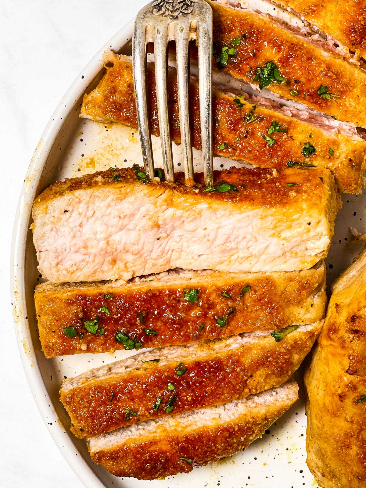

Porkchops
Easy cooked porkchops!
Oven baked porkchops quick and easy!
Ingredients

- 4 boneless porkchops
- Mayo, mustard or some kind of binder
- Dan'O seasoning or seasoning of your choice
Directons
- preheat your oven to 350
- Bring your meat out and let it get to room temp
- In a bowl, combine all your spices with a binder of your choice, mix it with your meat and let that rest for
a few hours
- Place on a tray and bake for 20-25 mintues